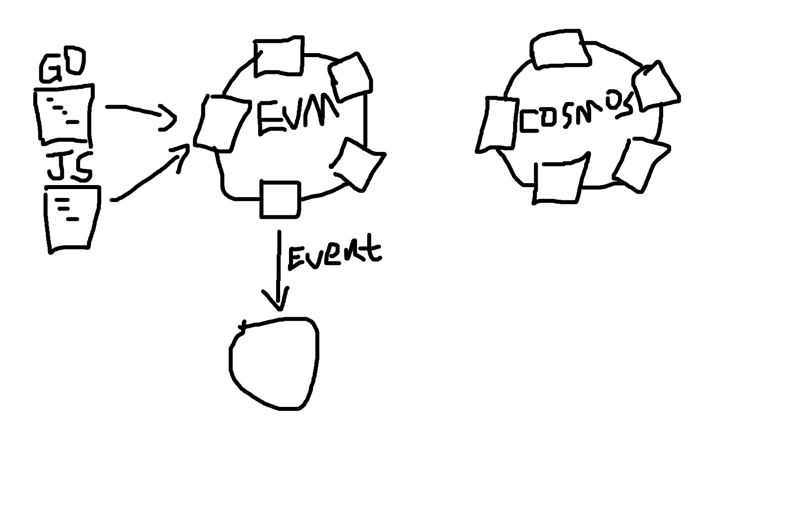

看懂任意区块链项目的技术架构
基本结构
最基本的区块链，就是一条区块链本身，包含有通过共识出块的能力，可能有很多节点，也可能只有一个节点，每个节点都提供接收交易的 RPC 接口：

因为以太坊的诞生，区块链的交易不仅仅是交易，还具有了智能合约的能力：

总会有一个外部的程序来和智能合约交互，也就是发起交易：

从这里开始需要明确两种行为：
- 凡是和区块链有交互的，可能是提交交易或者查询交易，都算是链上交互
- 和区块链没有任何交互的，属于链下行为
向智能合约发起交互一定属于链上交互，同样的，无论发起交易的外部程序，是用什么语言写的，可能是 Javascript 或者 Golang，都叫做智能合约的 SDK：
除了以太坊的 EVM 合约，还有可能是其他虚拟机（SVM、WASM）的合约，或者 Cosmos 直接操作状态数据库的方式（Native合约），可以统一理解为链上智能合约：
只要是链上合约，都会需要链下程序来发起交易，才能够实现某些功能。
而当智能合约有了具体的逻辑，很可能会触发一些事件，这些事件往往由链下节点来监听和处理：
这个链下节点起什么名字都可以，用什么语言写都可以，总之会获取到合约中的事件，一般监听事件的方式有两种：
- 主动查，不断请求节点的接口，看有没有新的事件
- 被动接受，比如 websocket 建立的长链接
当合约里触发某个事件后，链下节点监听到事件，会根据事件进入不同代码分支，后面进行多么复杂的操作都可以。
链下节点可能有多个，也可能有多种角色，但是不重要，重要的是，他们都是在和链上的事件进行交互：
一般链下节点之间不会擅自进行通信，而是紧跟区块链的块内容，因为链下节点也需要保持状态的一致，区块链场景下，链本身已经是非常好的能提供状态一致的手段了：

所以，这个时候你就知道，其实对于区块链项目来说，链下节点和链上节点之间，只有两种动作：
- 通过交易向区块链发送数据
- 通过监听事件来从区块链查询事件
Cosmos 有一个能支持 EVM 合约的项目，还提供了 evm_hook 的接口，当 EVM 合约触发事件的时候会主动调用接口函数。这种 hook 函数本质上也是合约事件的被动监听，无非是从合约事件到链下节点调用的方式，从 RPC 请求变成了函数的直接调用。唯一增加的复杂度是 EVM 合约触发了 Cosmos 模块的函数，把两种合约的实现方式串起来了：

复杂架构也不会改变的是，链下节点和链上节点之前的交互，只有两种动作。
如果再复杂一点的话，会往什么方向复杂呢，链下节点开始向链上提交交易了：

也许在监听到事件后提交了一笔交易，交易触发了另一个事件，监听到另一个事件后进行了更多的操作。但是总之，链下节点和链上节点之前的交互，仍然只有两种动作。
填充业务逻辑
有了基本的技术手段，再往上填充业务逻辑，就容易理解了。
面对很长的业务逻辑，总是能分清楚哪些部分是链上交互、哪些部分是链下行为，核心区别在于数据状态存在哪里，是区块链上，还是链下节点：
- 如果是通过交易发送到链上，业务的复杂程度就取决于合约的逻辑。
- 如果是链下节点监听到事件后的行为，那就取决于链下代码的复杂程度。
如果复杂度超出了上述两种情况，就只能是链下节点之间脱离区块链进行了擅自的通信，并且还产生了不一致的状态，这样的链下节点可以认为已经在区块链项目之外了。